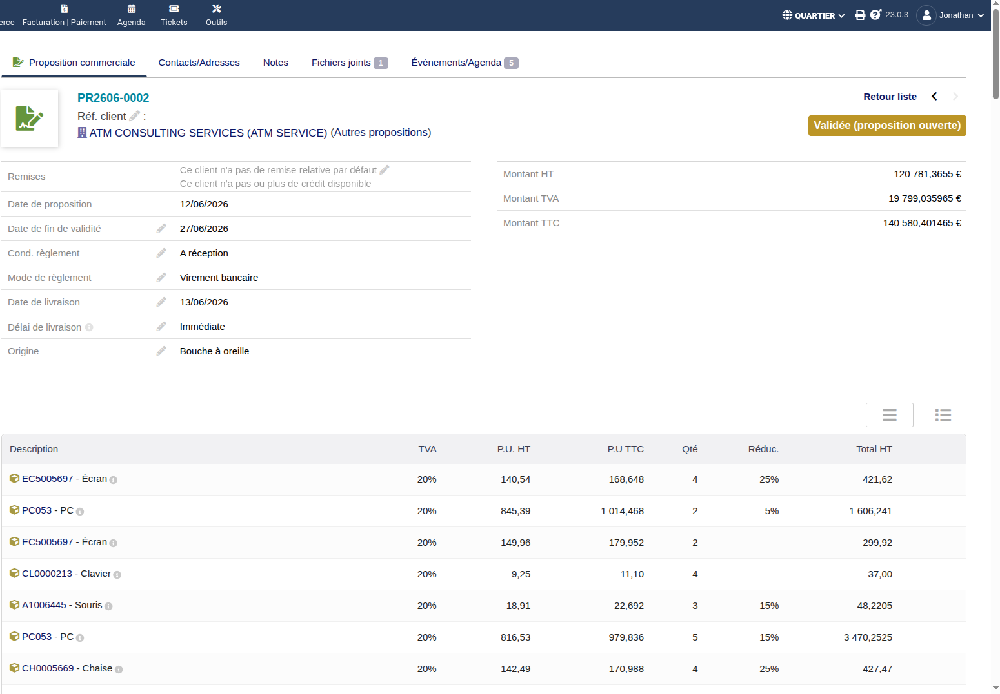
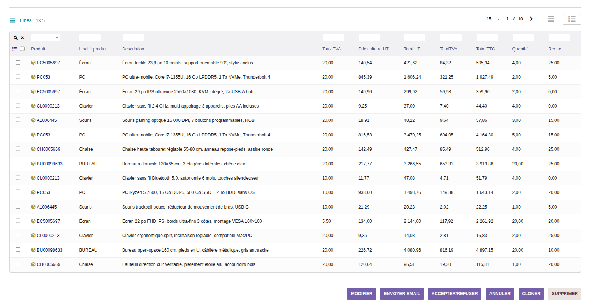
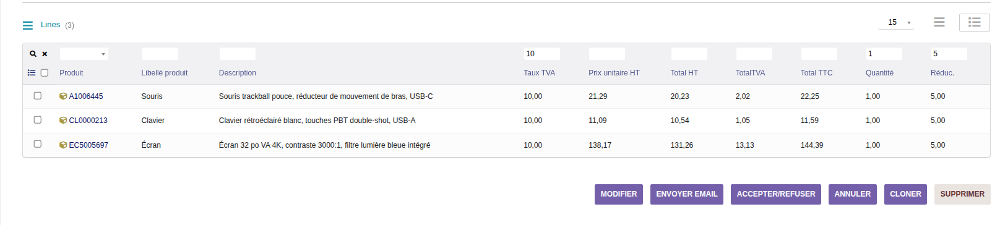
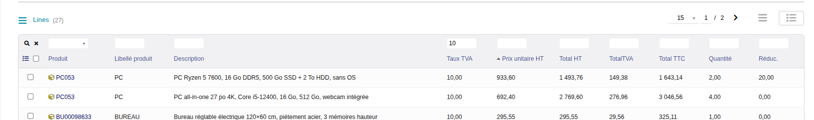
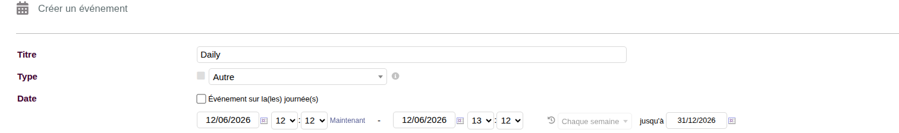
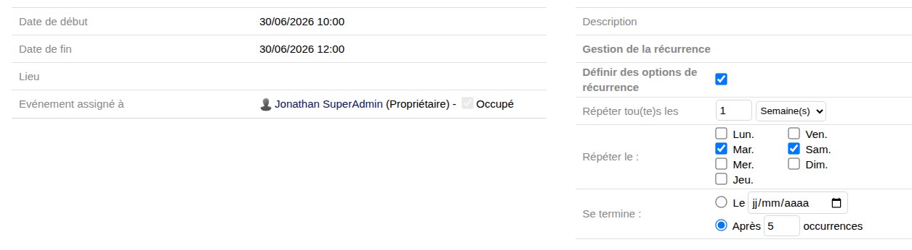
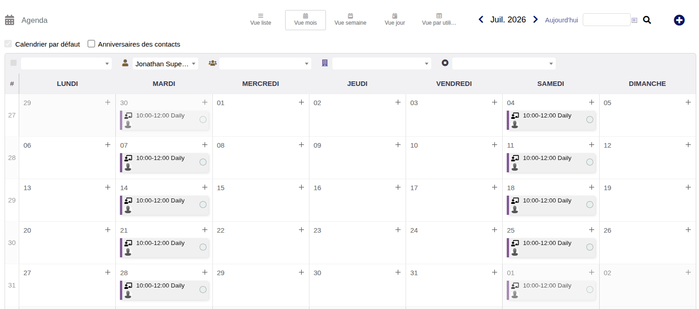

Devcamp Dolibarr
Noisy-le-Grand, juin 2026
Transformer l'affichage des lignes de vos documents
Automatiser les événements répétitifs dans Dolibarr
Transformer l'affichage des lignes de vos documents

"Ce module ne change pas comment Dolibarr gère tes documents — il change comment tu consultes et navigues dans tes lignes."
La logique Dolibarr reste inchangée
Un bouton pour passer
Standard ↔ Advanced
Préférence sauvegardée par utilisateur et par type de document



Ouvrir un document avec beaucoup de lignes → mode Standard
Avec "Advanced" → liste transformée instantanément
Taper dans un filtre → lignes filtrées en temps réel
Ouvrir le sélecteur de colonnes → cocher/décocher
Automatiser les événements répétitifs dans Dolibarr

Pas d'intervalle personnalisé — uniquement 1×/semaine ou 1×/mois
Un seul jour par semaine — impossible de faire Lundi + Jeudi
Fin par date uniquement — impossible de dire "après 6 occurrences"
Pas de série liée — modifier un événement n'affecte pas les autres
"Créez l'événement une fois, définissez la récurrence — Dolibarr génère automatiquement toute la série."
Jour, semaine, mois, année — avec sélection des jours
Toutes les occurrences créées à la sauvegarde
Modifier le maître propage à toute la série
La modification est propagée à toutes les occurrences de la série
Seule cette occurrence est modifiée — elle devient indépendante
Suppression en cascade de toutes les occurrences de la série
Fréquence : 1 semaine — Jours : Mardi + Jeudi — Fin : dans 3 mois
Fréquence : 2 semaines — Fin : après 6 occurrences
Fréquence : 1 mois — Fin : 31/12/2026


Ouvrir Outils → Agenda → Nouvel événement
Cocher "Définir des options de récurrence"
Choisir : 1 semaine, jours Lundi + Mercredi, fin après 4 occurrences
Sauvegarder → vérifier les 4 événements générés dans l'agenda
ATM Consulting — jonathan.lescaut@atm-consulting.fr